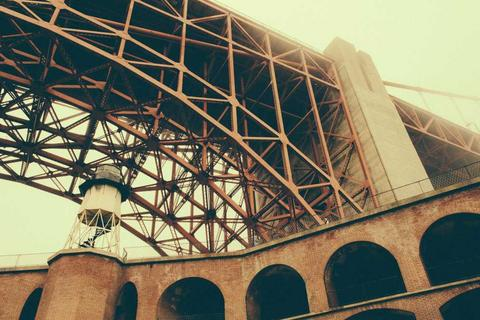
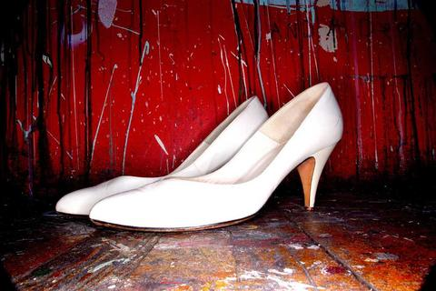

ARTnews · 今日 What’s Selling at Art Basel Paris? Reported Sales Top Out at $10 M. for a Richter and a Baselitz 来源：ARTnews 
ARTnews · 今日 Prized Monet Paintings at the Center of Milwaukee Art Museum and MFA St. Petersburg’s World Series Wager 来源：ARTnews
ARTnews · 今日 Artist Duo Brognon Rollin Awarded 2026 Prix Marcel Duchamp, France’s Top Art Prize 来源：ARTnews
ARTnews · 今日 Korean Culture Ministry to Audit Former Director of the National Museum 来源：ARTnews 
ARTnews · 今日 How Did 'American Gothic' Become So Iconic? This Art Historian Spent Five Decades Investigating. 来源：ARTnews
ARTnews · 今日 Frank Lloyd Wright's Taliesin West Home in Arizona Temporarily Closes After a Man Dies 来源：ARTnews
ARTnews · 今日 Louvre, Picasso Museum, Musée d’Orsay Will Close Saturday In Anticipation of Hard-Left Groups Targeting Public Buildings, Says Interior Minister 来源：ARTnews
ARTnews · 今日 Comcast Cofounder Gives $20 M. to Philadelphia Museum of Art, One of its Largest Gifts, To Greatly Expand Education Spaces 来源：ARTnews
ARTnews · 今日 More Paris Museums Announce Closures Ahead of Saturday Protests, Winner of Marcel Duchamp Prize Announced, and More: Morning Links for October 23, 2026 来源：ARTnews
Artforum · 今日 Philadelphia Museum of Art Receives Landmark $20 Million Gift for Education Center 来源：Artforum